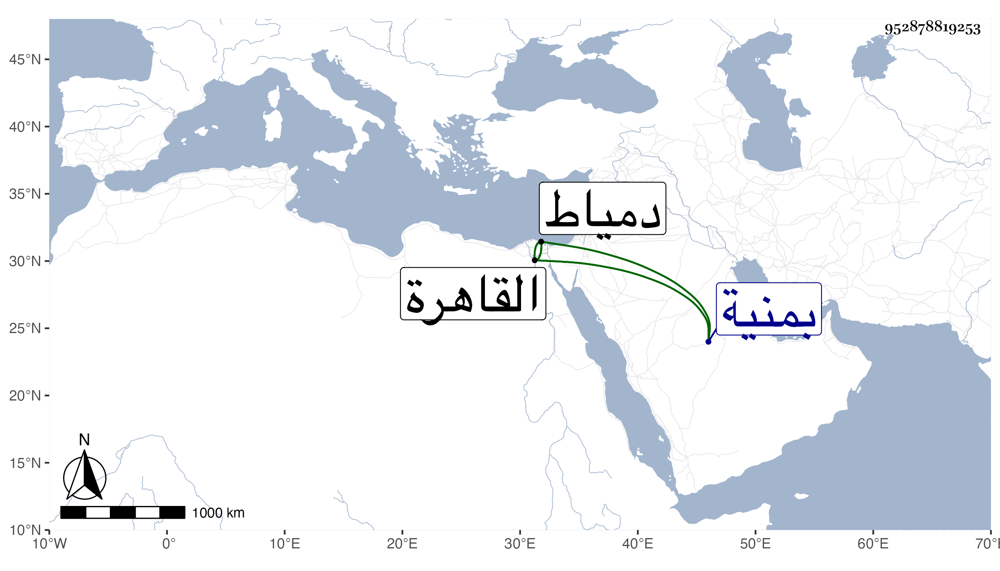

0902Sakhawi.DawLamic.ITO20230111-ara1.EIS1600.952878819253
Biography ID: 952878819253
570
محمد الشمس أبو الطيب شقيق اللذين قبله ووالد ناصر الدين محمد الآتي ويعرف بابن الفقيه حسن . ولد في ذي القعدة سنة اثنتين وثمانين وسبعمائة بمنية بدران ونشأ بها فقرأ القرآن عند والده وصلى به والعمدة والشاطبية والمنهاج الفرعي والأصلي وألفية النحو وعرض على جماعة . وارتحل إلى القاهرة في سنة خمس وتسعين فتلا لأبي عمرو على الشمس النشوي والزين أبي بكر السكاكيني وبحث على ثانيهما أصول الشاطبية وعلى أولهما من الفرش إلى آخرها وعلى الشمس البرشنسي في المنهاج وفي الألفية وسمع عليه البخاري في سعيد السعداء وعلى الشمس العراقي في الفقه والفرائض وكذا بحث الفصول لابن الهائم والنزهة مع النحو ورسالة الجمال المارداني في الميقات والخزرجية في العروض ومقدمة في المنطق على ناصر الدين البارنباري ، وأخذ النحو أيضا عن الشمس الشطنوفي وغيره والأصول عن الشمس العجيمي ، ثم عاد إلى بلده فاستمر بها حتى مات والده فتحول إلى دمياط فقطنها وتردد منها إلى القاهرة غير مرة وسمع بها بقراءته وقراءة غيره على الشرف بن الكويك والجمال عبد الله الحنبلي والولي العراقي والتقي الفاسي في آخرين ، وأجاز له عائشة ابنة ابن عبد الهادي وغيرها . وتصدى في دمياط للدريس فانتفع به جماعة كثيرون من أهلها والواردين إليها ، وولي بها خطابة جامع الزكي وإمامته مع نظره وبه كانت إقامته ولقيته فيه بل وفي القاهرة قبل ذلك وقرأت عليه أشياء . وكان فاضلا خيرا ثقة كثير التلاوة آمرا بالمعروف ناهيا عن المنكر له جلالة ووجاهة وكلمة نافذة وسمت حسن وشيبة نيرة وإذا قرأ خشعت القلوب لقراءته مع التواضع والفتوة وحسن التودد وإكرام الغرباء والوافدين . مات بدمياط بعد أن حصل له نوع خبل في ثالث المحرم سنة ثمان وخمسين ولم يخلف بعده بها في مجموعه مثله رحمه الله ونفعنا به .
